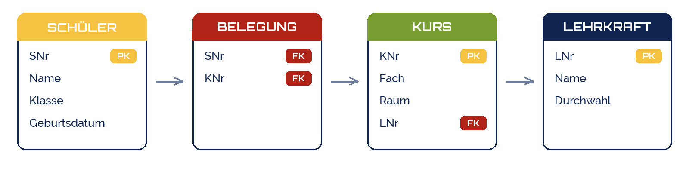

fotografierende
fotografierende
Good morning!
Nur das Schöne wird die Welt retten!
Fjodor Dostojewski
Nicht verzagen, Doc Alvers fragen!
Informatik — FOS 12
Ein DBMS bedienen I
Tabellen anlegen, Daten eingeben, sortieren — mit SQLite
Nicht verzagen, Doc Alvers fragen!
Kapitel 01
Das Werkzeug: SQLite
Eine Datei, ein Programm — die ganze Datenbank
Nicht verzagen, Doc Alvers fragen!
Warum SQLite?
Die ganze Datenbank ist eine Datei: schule.db — kopieren, mailen, fertig
Kein Server, keine Installation im Netz: läuft sofort auf jedem Rechner
Steckt in jedem Smartphone und in jedem Browser — die meistverbreitete Datenbank der Welt
Grafisch: DB Browser for SQLite — Konsole: sqlite3
Die Sprache ist SQL — dieselbe wie bei MySQL, PostgreSQL, Oracle
Nicht verzagen, Doc Alvers fragen!
Zwei Wege, ein Ergebnis
Grafische Oberfläche
Tabelle anlegen per Dialog: Spalte, Typ, Häkchen
Daten eintippen wie in einer Tabellenkalkulation
Sortieren: Klick auf den Spaltenkopf
Gut zum Ausprobieren und Nachsehen
SQL-Befehle
CREATE TABLE, INSERT, ORDER BY
Wiederholbar: Skript speichern, neu ausführen
Kopierbar: in jedem DBMS fast gleich
Das lernen wir — die Oberfläche erklärt sich selbst
Nicht verzagen, Doc Alvers fragen!
Kapitel 02
Tabellen anlegen
Erst die Struktur: Spalten, Datentypen, Schlüssel
Nicht verzagen, Doc Alvers fragen!
Der Plan: vier Tabellen für schule.db

Das ist die aufgeteilte Kursliste aus der letzten Woche
Reihenfolge beim Anlegen: erst Lehrkraft und Schüler, dann Kurs, dann Belegung
Warum? Ein Fremdschlüssel braucht die Tabelle, auf die er zeigt
Nicht verzagen, Doc Alvers fragen!
Schritt 1: Lehrkraft und Schüler anlegen
-- schule.db: Tabellen ohne Fremdschlüssel zuerst
CREATE TABLE Lehrkraft (
LNr INTEGER PRIMARY KEY,
Name TEXT NOT NULL,
Durchwahl INTEGER CHECK (Durchwahl BETWEEN 10 AND 99)
);
CREATE TABLE Schueler (
SNr INTEGER PRIMARY KEY,
Name TEXT NOT NULL,
Klasse TEXT NOT NULL CHECK (Klasse IN ('FO12a', 'FO12b')),
Geburtsdatum TEXT -- 'JJJJ-MM-TT', siehe Datentypen
);Nicht verzagen, Doc Alvers fragen!
Schritt 2: Kurs und Belegung — mit Fremdschlüsseln
PRAGMA foreign_keys = ON; -- SQLite prüft Fremdschlüssel nur auf Wunsch! CREATE TABLE Kurs ( KNr INTEGER PRIMARY KEY, Fach TEXT NOT NULL, Raum TEXT, LNr INTEGER NOT NULL REFERENCES Lehrkraft(LNr) ); CREATE TABLE Belegung ( SNr INTEGER NOT NULL REFERENCES Schueler(SNr), KNr INTEGER NOT NULL REFERENCES Kurs(KNr), PRIMARY KEY (SNr, KNr) -- zusammengesetzter Schlüssel: jedes Paar nur einmal );
Nicht verzagen, Doc Alvers fragen!
Datentypen: was in eine Spalte darf
| Typ | Bedeutung | Beispiel | Spalte |
|---|---|---|---|
| INTEGER | ganze Zahl | 1004 | SNr, Durchwahl |
| REAL | Kommazahl | 1.75 | Größe, Preis |
| TEXT | Zeichenkette | 'Lena Krause' | Name, Klasse |
| TEXT als Datum | 'JJJJ-MM-TT' | '2008-04-17' | Geburtsdatum |
Text immer in einfachen Anführungszeichen: 'FO12a'
SQLite hat keinen Datumstyp — Datum als Text in ISO-Form speichern
Warum ISO? '2008-04-17' < '2009-01-03' — sortiert sich von selbst richtig
Falle: '17.04.2008' sortiert nach dem Tag — nicht nach dem Jahr
Nicht verzagen, Doc Alvers fragen!
Kapitel 03
Daten eingeben
INSERT, UPDATE, DELETE — und was das DBMS ablehnt
Nicht verzagen, Doc Alvers fragen!
INSERT: Datensätze eintragen
-- Reihenfolge der Werte = Reihenfolge der Spalten INSERT INTO Lehrkraft VALUES (1, 'Alvers', 31); INSERT INTO Lehrkraft VALUES (2, 'Schulze', 42); -- sicherer: Spalten nennen, mehrere Zeilen auf einmal INSERT INTO Schueler (SNr, Name, Klasse, Geburtsdatum) VALUES (1001, 'Lena Krause', 'FO12a', '2008-04-17'), (1002, 'Tim Vogel', 'FO12a', '2007-11-02'), (1003, 'Mia Hahn', 'FO12b', '2008-09-30'); INSERT INTO Kurs (KNr, Fach, Raum, LNr) VALUES (3, 'Informatik', '204', 1); INSERT INTO Belegung VALUES (1001, 3), (1002, 3), (1003, 3);
Nicht verzagen, Doc Alvers fragen!
Was das DBMS ablehnt
| Versuch | Antwort von SQLite | Regel |
|---|---|---|
| INSERT INTO Schueler VALUES (1001, 'Ali', 'FO12a', NULL) | UNIQUE constraint failed | Entität |
| INSERT INTO Schueler VALUES (1005, NULL, 'FO12b', NULL) | NOT NULL constraint failed | Entität |
| INSERT INTO Schueler VALUES (1006, 'Jo', 'FO12x', NULL) | CHECK constraint failed | Wertebereich |
| INSERT INTO Kurs VALUES (7, 'Chemie', '118', 9) | FOREIGN KEY constraint failed | Referenz |
Das DBMS prüft jede Zeile gegen die Regeln aus CREATE TABLE
Fehlermeldung lesen: sie nennt die verletzte Regel — nicht die Zeile
Fremdschlüssel-Fehler nur, wenn PRAGMA foreign_keys = ON gesetzt ist
Nicht verzagen, Doc Alvers fragen!
UPDATE und DELETE: nie ohne WHERE
-- Informatik zieht um: EINE Änderung, weil der Raum nur einmal gespeichert ist UPDATE Kurs SET Raum = '210' WHERE Fach = 'Informatik'; -- Ben Roth verlässt die Schule: erst die Belegungen, dann der Schüler DELETE FROM Belegung WHERE SNr = 1004; DELETE FROM Schueler WHERE SNr = 1004; -- Der Kurs Mathematik bleibt erhalten - keine Löschanomalie mehr -- GEFAHR: ohne WHERE trifft es ALLE Zeilen UPDATE Kurs SET Raum = '210'; -- alle Kurse in Raum 210 DELETE FROM Schueler; -- Tabelle leer, keine Rückfrage
Nicht verzagen, Doc Alvers fragen!
Kapitel 04
Sortieren
ORDER BY — eine Reihenfolge, die das DBMS herstellt
Nicht verzagen, Doc Alvers fragen!
ORDER BY: das DBMS sortiert, nicht du
-- alle Schüler, alphabetisch SELECT * FROM Schueler ORDER BY Name; -- absteigend: die Jüngsten zuerst SELECT Name, Geburtsdatum FROM Schueler ORDER BY Geburtsdatum DESC; -- mehrere Schlüssel: erst Klasse, innerhalb der Klasse nach Name SELECT Klasse, Name FROM Schueler ORDER BY Klasse, Name; -- nur die ersten drei SELECT Name FROM Schueler ORDER BY Geburtsdatum LIMIT 3;
Nicht verzagen, Doc Alvers fragen!
Sortieren mit zwei Schlüsseln
Erster Schlüssel sortiert grob: Klasse
Zweiter Schlüssel entscheidet bei Gleichstand: Geburtsdatum
DESC = absteigend, ASC = aufsteigend (Standard)
Die Daten in der Tabelle bleiben unsortiert — nur das Ergebnis ist geordnet
| Klasse | Name | Geburtsdatum |
|---|---|---|
| FO12a | Lena Krause | 2008-04-17 |
| FO12a | Tim Vogel | 2007-11-02 |
| FO12b | Mia Hahn | 2008-09-30 |
| FO12b | Ben Roth | 2008-01-25 |
Nicht verzagen, Doc Alvers fragen!
Falle: Zahlen als Text sortieren
Als TEXT gespeichert, sortiert SQLite zeichenweise: '1' kommt vor '9', also '10' vor '9'
Als INTEGER gespeichert, sortiert es nach Wert: 9 vor 10
Deshalb: Datentyp beim Anlegen richtig wählen
Fun Fact: derselbe Fehler lässt in Dateilisten Datei10 vor Datei2 stehen
| Raum als TEXT | Raum als INTEGER |
|---|---|
| '118' | 9 |
| '204' | 10 |
| '210' | 118 |
| '9' | 204 |
| '95' | 210 |
Nicht verzagen, Doc Alvers fragen!
Erst die Struktur, dann die Daten. Und nie ein UPDATE oder DELETE ohne WHERE.
Merksatz
Nicht verzagen, Doc Alvers fragen!
Eure Aufgabe: schule.db anlegen
schule.db anlegen — mit DB Browser for SQLite oder sqlite3
Die vier Tabellen mit den Regeln aus den Folien erstellen (PRAGMA nicht vergessen)
Je Tabelle fünf Datensätze eintragen — eure eigenen Namen sind erlaubt
Drei Sortierungen: nach Name, nach Geburtsdatum absteigend, nach Klasse und Name
Einen Fehlversuch provozieren: Fehlermeldung notieren und die Regel benennen
Nicht verzagen, Doc Alvers fragen!